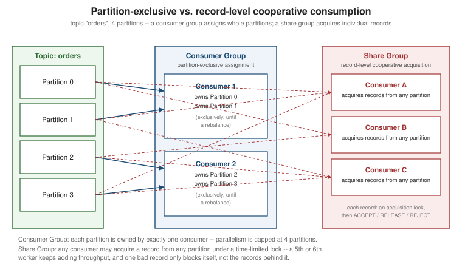

Kafka Share Groups (Queues for Kafka)
|
This content was generated with the assistance of AI and should be verified against the official documentation before being relied on in production. |
Every consumer covered on Kafka Consumers belongs to a consumer group, where Kafka’s one hard rule is that a partition is owned by at most one member of that group at a time. That rule is exactly what gives a consumer group its ordering guarantee, but it also caps parallelism at the partition count and makes per-record retry awkward — a single slow or bad record blocks everything behind it on that partition until the whole batch is committed or the consumer gives up and re-reads it. Share groups (KIP-932, generally available and production-ready since Kafka 4.2) are a second, different kind of group built on the same brokers and the same topics, designed for exactly the workloads that fit that description poorly: traditional queue-style task distribution where many workers should be able to pull from the same partitions and where one bad message should not stall its neighbors. This page covers share groups end to end: how they differ from consumer groups, the record-level lock and outcome model that replaces partition ownership and offset commits, delivery-count-based poison-message handling, and what the model deliberately does not yet provide.
Share groups vs. consumer groups
A share group is identified by group.id, exactly like a consumer group — the two live in the same namespace,
so a given group ID is either a consumer group or a share group, never both, and using the wrong client type
against an existing group of the other kind fails outright. The fundamental differences are:
| Consumer group | Share group | |
|---|---|---|
Partition ownership |
Each partition is assigned to exactly one consumer at a time; the group’s parallelism is capped at the partition count. |
Partitions may be assigned to, and consumed from, multiple share consumers at once; the number of members can exceed the number of partitions. |
Unit of delivery/acknowledgement |
Offsets, committed in bulk per partition — an application acknowledges "everything up through here." |
Individual records, each acquired and acknowledged on its own, though the client batches acquisition and acknowledgement under the hood for efficiency. |
Redelivery on failure |
Whatever was fetched since the last commit is redelivered to whichever consumer picks up the partition next. |
Only the specific record(s) released or left unacknowledged are redelivered — a bad record does not block records after it on the same partition from being delivered to other members. |
All share consumers in the same share group that are subscribed to the same topic cooperatively consume that topic’s records — this is the point-to-point, competing-consumers pattern from Messaging Models and Patterns, but at record granularity rather than partition granularity. A different share group (or a consumer group) reading the same topic does so entirely independently, with its own delivery and acknowledgement state, exactly as two consumer groups do today. The figure below contrasts the two assignment models on the same four-partition topic.

Record acquisition, locks, and outcomes
When a share consumer calls poll(Duration), it receives available records from any partition its group
subscribes to, not just partitions "assigned" to it in the consumer-group sense. Each returned record is
acquired for that consumer under a time-limited acquisition lock: while the lock holds, the same record is
unavailable to every other consumer in the group, but once it expires — or the consumer explicitly gives it up — the record becomes available for another delivery attempt, to the same consumer or a different one. The lock
duration defaults to 30 seconds and is controlled by the broker configuration group.share.record.lock.duration.ms
(dynamically overridable per share group as share.record.lock.duration.ms).
A share consumer holding an acquired record settles it in one of four ways, via
ShareConsumer.acknowledge(ConsumerRecord, AcknowledgeType):
AcknowledgeType |
Meaning |
|---|---|
|
The record was processed successfully. It is marked acknowledged and never redelivered. |
|
Processing failed but the failure looks transient. The record is released immediately, making it available for another delivery attempt (to this or another consumer), without waiting for the lock to expire. |
|
Processing failed and the failure looks permanent — the record is unprocessable. It is rejected outright and never redelivered, regardless of the delivery count limit below. |
|
Processing is still under way and legitimately needs more time. The acquisition lock is extended so another consumer does not acquire the same record out from under the one still working on it. |
Doing nothing at all is also a valid outcome: once the lock duration elapses with no acknowledgement, the broker
releases the record automatically, exactly as if the consumer had called RELEASE itself. Two acknowledgement
modes control when these calls actually take effect, set with the client configuration share.acknowledgement.mode:
implicit (the default) acknowledges every record in a batch as ACCEPT automatically on the next poll() or
commitSync()/commitAsync() call, while explicit requires the application to call acknowledge() itself for
every record and rejects a batch containing any record the application never settled. See
Apache Kafka Javadoc — AcknowledgeType for these four outcomes and
Apache Kafka — Consumer and Share Consumer Configs
for share.acknowledgement.mode.
Delivery counts, poison messages, and the acquire mode
Every record tracks how many times it has been delivered. group.share.delivery.count.limit (broker default
5, per-group override share.delivery.count.limit) caps that count: once a record has been delivered this many
times without an ACCEPT, the broker stops offering it for further delivery and moves it to the archived
state instead — effectively an automatic, built-in poison-message guard with no dead-letter topic or extra
tooling required to keep one bad record from being retried forever. A share-partition’s records move through
four states: Available (eligible, not currently held by anyone), Acquired (held under a consumer’s lock),
Acknowledged (settled with ACCEPT), and Archived (removed from delivery — either accepted, rejected, or
past the delivery count limit).
share.acquire.mode controls how a poll() call’s return size interacts with max.poll.records:
| Value | Behavior |
|---|---|
|
A |
|
|
Kafka bounds how large this "currently held" set of records can get, per share-partition, with the broker
configuration group.share.partition.max.record.locks: once that many records are acquired and not yet settled,
further fetches from that partition temporarily yield nothing new until locks are released, either explicitly or
by timing out. Internally this window is tracked as the share-partition start offset (SPSO, the oldest record
still eligible for delivery) and share-partition end offset (SPEO, how far fetching has advanced); records
between the two are the in-flight set. This is deliberately different from a classic message queue’s
"head-of-line blocking": a record stuck at the SPSO because it keeps being released or rejected does not stop
records ahead of it (closer to the SPEO) from being delivered to other consumers — only the size of the in-flight
window itself is bounded, not progress past any single stuck record.
What share groups do not (yet) provide
Share groups are deliberately scoped to record-level cooperative delivery, not a general-purpose message-queue replacement. As of Kafka 4.3, a share group does not offer, and should not be assumed to offer: subscribing by topic pattern (only explicit topic names); a per-message time-to-live independent of the topic’s own retention; message priorities; scheduled or delayed delivery; automatic routing of rejected/archived records to a dead-letter topic (an application that needs one still has to build it itself, e.g. by producing a rejected record onward from its own error handling); reads served from a follower replica rather than the partition leader; or server-side content filtering of which records a given consumer receives. These are current limitations of the KIP-932 design, not defects — several are natural candidates for future KIPs, and none of them change the delivery/lock/acknowledgement model described above.
A ShareConsumer example
KafkaShareConsumer, the concrete implementation of the ShareConsumer interface, mirrors KafkaConsumer’s
shape closely: construct it with `Properties, subscribe() to a list of topics, and loop on poll(Duration).
The example below runs with explicit acknowledgement so each record’s outcome is decided individually, against
kafka-clients 4.3 — the version in which share groups became production-ready (KIP-932 first shipped as early
access in 4.0).
package com.example.orders;
import java.time.Duration;
import java.util.Collections;
import java.util.Properties;
import org.apache.kafka.clients.consumer.AcknowledgeType;
import org.apache.kafka.clients.consumer.ConsumerConfig;
import org.apache.kafka.clients.consumer.ConsumerRecord;
import org.apache.kafka.clients.consumer.ConsumerRecords;
import org.apache.kafka.clients.consumer.KafkaShareConsumer;
import org.apache.kafka.clients.consumer.ShareConsumer;
import org.apache.kafka.common.serialization.StringDeserializer;
public class OrderTaskShareConsumer {
public static void main(String[] args) {
Properties props = new Properties();
props.put(ConsumerConfig.BOOTSTRAP_SERVERS_CONFIG, "localhost:9092");
props.put(ConsumerConfig.GROUP_ID_CONFIG, "order-task-workers");
props.put(ConsumerConfig.KEY_DESERIALIZER_CLASS_CONFIG, StringDeserializer.class.getName());
props.put(ConsumerConfig.VALUE_DESERIALIZER_CLASS_CONFIG, StringDeserializer.class.getName());
// decide ACCEPT/RELEASE/REJECT per record explicitly, instead of an implicit ACCEPT on the next poll()
props.put("share.acknowledgement.mode", "explicit");
try (ShareConsumer<String, String> shareConsumer = new KafkaShareConsumer<>(props)) {
shareConsumer.subscribe(Collections.singletonList("orders"));
while (true) {
ConsumerRecords<String, String> records = shareConsumer.poll(Duration.ofMillis(500));
for (ConsumerRecord<String, String> record : records) {
try {
processTask(record);
shareConsumer.acknowledge(record, AcknowledgeType.ACCEPT);
} catch (TransientTaskException e) {
// worth retrying, on this or another worker in the group
shareConsumer.acknowledge(record, AcknowledgeType.RELEASE);
} catch (UnprocessableTaskException e) {
// permanently broken -- never redeliver it
shareConsumer.acknowledge(record, AcknowledgeType.REJECT);
}
}
// sends the batch's accumulated acknowledgements to the brokers
shareConsumer.commitSync();
}
}
}
private static void processTask(ConsumerRecord<String, String> record) {
// apply the task; throws TransientTaskException or UnprocessableTaskException on failure
}
}Any number of OrderTaskShareConsumer instances can run concurrently against the same group.id here, all
cooperatively pulling from every partition of orders — unlike the equivalent consumer-group example on
Kafka Consumers, adding a fourth or fifth instance keeps adding
throughput even though the topic itself might only have, say, three partitions. See
Apache Kafka
Javadoc — KafkaShareConsumer for the full API, including setAcknowledgementCommitCallback() for asynchronous
acknowledgement confirmation.